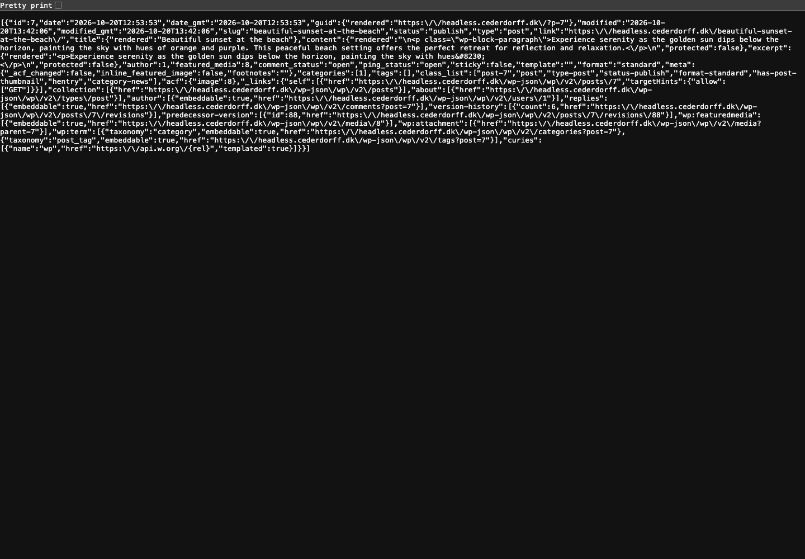

Lab-appen
Vi bygger den tekniske stack sammen: Next.js, headless WordPress, designsystem og login.
Next.js · Server components · WordPress som headless CMS
RACE
I grupper gør I et eksisterende, kedeligt produkt mindeværdigt med motion, microinteractions og personlighed — uden at det går ud over brugerens mål.
Vi bygger den tekniske stack sammen: Next.js, headless WordPress, designsystem og login.
Kick-off, roller og beskyttet adgang, motion i kode — og faciliteret vejledning frem mod aflevering.
Pitch Day, optimeringer på branches og mundtlig eksamen med produktet live.
Kort inputet nyt begreb eller værktøj
→Implementeringi lab-appen
→Overførseltil jeres gruppeprojekt
26/10 · I dagNext.js og headless WordPress
29/10Designsystem fra Figma til kode
30/10Supabase Auth i Next.js
2/11Kick-offgrupper og produkt
3/11Produktkvalificering med underviserne
10/11User management, roller og beskyttet adgang
12/11Motion og microinteractions i kode
16/11Faciliteret vejledningmorgen: deployment
23/11Faciliteret vejledningmorgen: tjek før aflevering
24/11 kl. 12Aflevering i WISEflow
27/11Pitch Day
1/12 og 3/12Optimering og eksamensforberedelse
9.–11/12Mundtlig eksamen
Faciliteret vejledning: Dagen starter med en kort fælles morgen-session. Resten af dagen arbejder I i grupperne, og vi går rundt og vejleder. Derudover har I undervisning med NKKR og BKI — se Canvas.
layout.js · opgave 2
fetch i komponenten · cards · loading.js · opgave 4
[slug] · notFound() · HTML fra WordPress · opgave 5
PostList · lib/wordpress.js · formatDate() · opgave 6
_embed · fejlhåndtering · opgave 7

/posts/[slug] med hele indholdet
I dagNext.js og WordPress
29. oktoberDesignsystem og Tailwind CSS
30. oktoberSupabase Auth
10. novemberRoller og beskyttet adgang
12. novemberMotion og microinteractions
— så hvad er problemet med den React-app, I allerede kan bygge?
Skriv stikord ned i de to kolonner, mens du ser. Vi bruger dem lige bagefter.
Videoen er fra 2021. Resten af videoen bruger den ældre Pages Router. Vi bruger App Router — principperne er de samme.
<div id="root">.
fetch → render. Hvert trin venter på
det forrige.
Jeres Post App fra Product optimization var fin som CSR.
I dag viser vi offentligt indhold fra WordPress, som skal vises hurtigt og kunne findes. Derfor renderer vi på serveren — og det er præcis det, Next.js er bygget til.
Request →GET /posts
← ResponseHTML · CSS · JS · JSON
localhost
GET og evt. data.200 eller 404 og et indhold.Dagens spørgsmål: Hvor kører React-koden — på clienten eller på serveren?
npm run dev starter en rigtig server. I Vite serverede den kun filer. I
Next.js kører din React-kode på den, før browseren får noget.
Browseren modtager en næsten tom side og bygger HTML'en selv med JavaScript.
index.html — en tom <div id="root">useEffect henter dataServeren kører React, henter data og sender færdig HTML med indholdet.
/postsonClick.
<!doctype html>
<html lang="en">
<head>
<title>Post App</title>
<script type="module" src="/assets/index-B3x9.js"></script>
</head>
<body>
<div id="root"></div>
</body>
</html><!DOCTYPE html>
<html lang="da">
<head>
<title>My WordPress App</title>
<script src="/_next/static/chunks/…js" async></script>
</head>
<body>
<header>…</header>
<main>
<h1>Posts</h1>
<article>
<h2>Beautiful sunset at the beach</h2>
<p>Experience serenity as …</p>
Prøv selv: Højreklik → Vis sidekilde (⌥⌘U) på din app fra Product
optimization og på din Next.js-app. Brug ikke Elements i DevTools — den viser DOM'en, efter
JavaScript har kørt.
Bygger UI'et af komponenter, props og state.
Du bestemmer selv, hvordan resten af appen hænger sammen.Starter en dev-server og bundler din kode til filer, browseren kan køre.
Det, I har brugt indtil nu — sammen med React Router.React + routing, server, datahentning og build i én samlet løsning.
Frameworket bestemmer strukturen. Du udfylder den med dine komponenter.page.js.app/ bliver til routes
useEffect, useState og loading i hver komponentawait fetch direkte i komponenten
VITE_-værdier ender i browserens JavaScriptKoden på serveren kan bruge værdier, browseren aldrig ser
Next.js erstatter ikke React. Det er React plus de beslutninger, I ellers skulle træffe og sætte sammen selv.
useStateonClick og onSubmitpackage.json og Git
app/ bliver til URL'er<Routes>
<Route path="/" element={<HomePage />} />
<Route path="/posts" element={<PostsPage />} />
<Route path="/about" element={<AboutPage />} />
</Routes>app/
├── page.js → /
├── posts/
│ └── page.js → /posts
└── about/
└── page.js → /aboutpage.js er siden.
async og bruge awaitexport default async function PostsPage() {
const response = await fetch(url);
const posts = await response.json();
return <h1>{posts.length} posts</h1>;
}"use client"
useState og events som onClicklocalStorage"use client";
export default function LikeButton() {
const [liked, setLiked] = useState(false);
// …
}
I dag er næsten alt server components. Kun error.js i punkt 8 skal have
"use client", fordi den har en knap.
Én kommando med flag — så ingen svarer forkert på et spørgsmål undervejs.
npx create-next-app@latest my-app --js --no-tailwind --eslint --app \
--no-src-dir --import-alias "@/*" --no-react-compiler --cache-components--jsJavaScript i stedet for TypeScript--appApp Router: mapper i app/ bliver til routes
--no-tailwindAlmindelig CSS i dag — Tailwind CSS kommer næste gang
--eslintLinter, der fanger fejl, mens du skriver--import-alias "@/*"@/components/Header i stedet for ../../components/Header
--cache-componentsNext.js' nye standard for data og caching — vi møder den i punkt 5
Skift my-app ud med navnet på dit projekt.
app/layout.jsRammen om alle sider: <html>, <body> og metadata
app/page.jsForsiden på /
app/globals.cssGlobal CSS for hele appen
app/page.module.cssCSS Module — klassenavne gælder kun i den komponent, der importerer filen
public/Statiske filer som billeder og ikoner
next.config.mjsKonfiguration. Læg mærke til cacheComponents: true
package.jsonScripts: npm run dev, npm run build og npm start
AGENTS.mdVejledning til AI-agenter om den aktuelle version af Next.js
Kør kommandoen fra før med dit eget projektnavn.
Åbn projektmappen i VS Code.
Kør npm run dev, og åbn localhost:3000.
Gennemgå strukturen fra sidste slide.
Fjern demoindholdet i page.js og page.module.css.
Opdatér titel, beskrivelse og lang i layout.js.
Git er allerede sat op med et første commit.
Opret et tomt repository på GitHub uden README, og push.
Sidder du fast? Sammenlign med de første commits i referencerepoet.
Du er klar, når: Appen kører lokalt med din egen titel, og udgangspunktet ligger på GitHub.
Og layout.js er det, der går igen på alle sider.
/posts, som viser en bestemt side. I Next.js er det en mappe i app/ med en page.js.page.js er en side
app/page.js→/forsiden
app/posts/page.js→/postsalle posts
app/about/page.js→/aboutAbout-siden
app/posts/[slug]/page.js→/posts/beautiful-sunset-at-the-beachén side pr. post — i punkt 6
app/not-found.js→/findes-ikkealle URL'er, der ikke matcher en route
layout.js er rammen om alle siderapp/layout.js
import Header from "@/components/Header";
import Footer from "@/components/Footer";
import "./globals.css";
export default function RootLayout({ children }) {
return (
<html lang="da">
<body>
<Header />
{children}
<Footer />
</body>
</html>
);
}Header og Footer står fastDe vises på alle sider og bliver stående, når du navigerer.
{children} er den aktuelle sideDet er her, page.js for den aktuelle
route bliver vist.
Link fra next/linkBrug <Link href="/posts"> i stedet for <a>. Så skifter kun siden
— uden fuld reload.
Lav app/posts/page.js og app/about/page.js.
Giv hver side en overskrift og en kort tekst.
Lav components/Header.js med navigation til /, /posts og
/about.
Brug Link fra next/link.
Lav en Footer, og vis begge komponenter i layout.js rundt om
{children}.
Tilføj app/not-found.js med en forståelig besked og et link til forsiden.
Virker en route ikke? Mappen skal hedde det samme som URL'en, og filen skal hedde
page.js.
Du er klar, når: Du kan navigere mellem /, /posts og
/about uden fuld reload, og /findes-ikke viser din not-found-side.
WordPress håndterer indholdet. Next.js står for præsentationen.
/wp-json/wp/v2/…
Redaktøren arbejder i et værktøj, de kender — uden at røre koden.
I bestemmer hele brugeroplevelsen — uden at være låst til et tema.
https://dit-domæne.dk/wp-json/wp/v2/posts
Alle udgivne postsDe nyeste først — 10 ad gangen som standard
…/wp-json/wp/v2/posts?slug=beautiful-sunset-at-the-beach
Én bestemt postTil detaljesiden i punkt 6
…/wp-json/wp/v2/pages?slug=about
Din About-pagePages hentes på samme måde som posts
Kladder er ikke med. Kun udgivet indhold er offentligt i REST API'et.

/wp-json/wp/v2/posts?per_page=1 i Chrome · ét post fylder allerede mange linjer
Slå Pretty print tilSå bliver JSON'en indrykket og til at læse.
Det er et arraySvaret starter med [ — også når der kun er ét post.
Du skal ikke bruge det heleFind de seks felter på næste slide.
{
"id": 7,
"date": "2026-10-20T12:53:53",
"slug": "beautiful-sunset-at-the-beach",
"title": {
"rendered": "Beautiful sunset at the beach"
},
"content": {
"rendered": "<p class=\"wp-block-paragraph\">…</p>"
},
"excerpt": {
"rendered": "<p>Experience serenity … hues…</p>"
}
}
idunik nøgle — fx til key i en liste
slugden læsbare del af URL'en til detaljesiden
dateudgivelsesdato, som vi formaterer selv
title.renderedoverskriften — kan indeholde entities som ’
excerpt.rendereduddraget — pakket ind i <p>
content.renderedhele indholdet som HTML
.rendered betyder HTML
<p>{post.excerpt.rendered}</p><p>Experience serenity as the golden sun dips below the horizon, painting the sky with hues…</p>
<div dangerouslySetInnerHTML={{ __html: post.excerpt.rendered }} />Experience serenity as the golden sun dips below the horizon, painting the sky with hues…
Åbn https://dit-domæne.dk/wp-json/wp/v2/posts i browseren.
Slå Pretty print til.
Find id, slug, date og de tre .rendered-felter i
første post.
Kopiér en slug, og åbn /posts?slug=….
Hvad sker der med en slug, der ikke findes?
Åbn /pages?slug=about.
Får du et array med din About-page?
Får du en fejl? Tjek, at Permalinks under Indstillinger ikke står til Plain, og at et sikkerhedsplugin ikke blokerer REST API'et.
Du er klar, når: Du kan forklare, hvad de seks felter skal bruges til, og du har en slug, du kan teste med.
Uden useEffect og useState.
async, hente data direkte og sende færdig HTML til browseren.loading.js..env.local · ignoreres af Git
WORDPRESS_URL=https://dit-domæne.dk.env.example · committes som dokumentation
# The URL of your WordPress site
# without a trailing slash
WORDPRESS_URL=https://your-domain.com
WORDPRESS_URLKun på serverenKan læses med process.env.WORDPRESS_URL i server components
NEXT_PUBLIC_…Sendes med til browserenKun til værdier, der må være offentlige
VITE_…Som i Product optimizationAltid en del af frontend-koden — kan ses af alle
Genstart npm run dev, hvis variablen ikke bliver fundet, efter du har oprettet .env.local.
app/posts/page.js
export default async function PostsPage() {
const response = await fetch(
`${process.env.WORDPRESS_URL}/wp-json/wp/v2/posts`
);
const posts = await response.json();
return (
<main>
<h1>Posts</h1>
<ul>
{posts.map((post) => (
<li key={post.id}>{post.title.rendered}</li>
))}
</ul>
</main>
);
}
async komponentEn server component må vente på data, før den returnerer JSX.
await fetchSamme fetch som du kender — bare uden useEffect.
Kører på serverenKaldet til WordPress sker på serveren. Browseren får færdig HTML.
Først titlerneNår listen virker, bygger vi cards ovenpå.
export default function PostsPage() {
const [posts, setPosts] = useState([]);
useEffect(() => {
async function getPosts() {
const response = await fetch(url);
const data = await response.json();
setPosts(data);
}
getPosts();
}, []);
return <PostList posts={posts} />;
}export default async function PostsPage() {
const response = await fetch(url);
const posts = await response.json();
return <PostList posts={posts} />;
}PostCard pr. postcomponents/PostCard.js
import Link from "next/link";
import styles from "./PostCard.module.css";
export default function PostCard({ post }) {
const date = new Date(post.date).toLocaleDateString("en-GB", {
day: "numeric",
month: "long",
year: "numeric",
});
return (
<article className={styles.card}>
<time dateTime={post.date}>{date}</time>
<h2 dangerouslySetInnerHTML={{ __html: post.title.rendered }} />
<div dangerouslySetInnerHTML={{ __html: post.excerpt.rendered }} />
<Link href={`/posts/${post.slug}`}>Read more</Link>
</article>
);
}Props som du kender demSiden sender ét post ad gangen ind i komponenten.
HTML-felterneTitel og uddrag vises med dangerouslySetInnerHTML.
Link til detaljesidenpost.slug bliver til URL'en — den route bygger vi i punkt 6.
Tom liste?Vis en besked, hvis der ingen posts er.
layout.jsapp/posts/loading.jsstår her, indtil page.js er klar
layout.jsStadig ét svar fra serverenBrowseren får layout og loading-state først. Indholdet streames bagefter i samme HTML-svar — tjek det med Vis sidekilde.
Error: Route "/posts": Next.js encountered uncached data … fetch(...) accessed
outside of <Suspense>
Data hentes ved hver requestMed Cache Components venter siden på WordPress, hver gang den vises.
Next.js vil vide, hvad der vises imensUden svar får du fejlen ovenfor — og
npm run build fejler.
app/posts/loading.js
export default function Loading() {
return (
<main>
<p>Loading posts …</p>
</main>
);
}app/
loading.jsforsiden · punkt 7
page.js
posts/
loading.jsalle posts · nu
page.js
[slug]/loading.jsén post · punkt 6
about/loading.jsAbout · punkt 7
Går du fra /posts til /about, bliver layoutet stående. Kun siden
under det skifter.
En app/loading.js ligger over det, der skifter —
den dækker ikke navigationen mellem dine sider.
Hver route, der henter data, får sin egen loading.js.
Gem din URL i .env.local, og dokumentér den i .env.example.
Gør app/posts/page.js async, hent posts med fetch, og vis
titlerne i en <ul>.
Lav PostCard, og vis posts som et grid med titel, uddrag, dato og link.
Vis en besked, hvis der ingen posts er.
Tilføj app/posts/loading.js.
Kør npm run build, og tjek, at det går igennem.
Er posts ikke et array? Log posts med console.log —
outputtet kommer i terminalen, ikke i browseren.
Du er klar, når: /posts viser dine posts som cards, og
npm run build går igennem.
[slug] er en pladsholder i URL'en.
[slug], så én page.js kan vise mange forskellige sider.beautiful-sunset-at-the-beach.slug/posts/beautiful-sunset-at-the-beachfx ved at klikke på et card
app/posts/[slug]/page.jssamme fil til alle posts
paramset Promise med { slug: "beautiful-sunset-at-the-beach" }
export default async function PostPage({ params }) {
const { slug } = await params;
// …
}
Husk await. params er et Promise i Next.js 16.
app/posts/[slug]/page.js
const response = await fetch(
`${process.env.WORDPRESS_URL}/wp-json/wp/v2/posts?slug=${slug}`
);
// WordPress always returns an array, even for a single match
const posts = await response.json();
const post = posts[0];
if (!post) {
notFound();
}[ {…} ]→
posts[0]Posten findes — vis den.
[ ]→
notFound()Next.js viser din not-found.js med status 404.
Importér notFound fra next/navigation. Vis content.rendered med
dangerouslySetInnerHTML.
dangerouslySetInnerHTML
React escaper normalt al tekst for at beskytte mod XSS — indsprøjtede scripts. Med
dangerouslySetInnerHTML slår du den beskyttelse fra.
Hvem kan skrive det indhold, du indsætter?
Opret app/posts/[slug]/page.js, og læs slug fra params.
Hent med ?slug=, brug posts[0], og kald notFound(), hvis den ikke
findes.
Vis titel, dato og content.rendered.
Tilføj et link tilbage til /posts.
Giv detaljesiden sin egen app/posts/[slug]/loading.js.
Du er klar, når: Et klik på et card åbner detaljesiden, og
/posts/findes-ikke viser din not-found-side.
Først gentager vi koden. Så samler vi den.
lib/wordpress.js — hvor al kommunikation med API'et samles i navngivne funktioner. Siderne beder om data uden at vide, hvordan det hentes.app/page.js
/wp-json/wp/v2/posts?per_page=3
Griddet skal nu bruges to steder. Flyt det til en PostList-komponent, som både forsiden og
/posts bruger.
components/PostList.jsapp/loading.jsapp/about/page.js
/wp-json/wp/v2/pages?slug=aboutSamme mønster som detaljesiden: et array, det første element og notFound().
app/about/loading.jslib/wordpress.js
const response = await fetch(
`${process.env.WORDPRESS_URL}/wp-json/wp/v2/posts`
);
const posts = await response.json();↓ samme kode — nyt sted og et navn
import { getPosts } from "@/lib/wordpress";
const posts = await getPosts();lib/wordpress.js
const API_URL = `${process.env.WORDPRESS_URL}/wp-json/wp/v2`;
export async function getPosts() {
const response = await fetch(`${API_URL}/posts`);
const posts = await response.json();
return posts;
}
export async function getLatestPosts() { … }
export async function getPostBySlug(slug) { … }
export async function getPageBySlug(slug) { … }Gevinsten kommer i punkt 8: Billeder og fejlhåndtering skal kun tilføjes ét sted.
lib/format.js
lib/format.js
export function formatDate(date) {
return new Date(date).toLocaleDateString("en-GB", {
day: "numeric",
month: "long",
year: "numeric",
});
}PostCard og på detaljesiden
import { formatDate } from "@/lib/format";
const date = formatDate(post.date);Ens overaltCards og detaljeside viser datoen på samme måde.
Én ændringVil du have dansk dato, skifter du kun "en-GB" til
"da-DK" ét sted.
Vis de 3 seneste posts med ?per_page=3.
Flyt griddet til PostList, og brug den på forsiden og /posts.
Hent /pages?slug=about, og vis den på /about.
Kald notFound(), hvis den ikke findes.
Tilføj app/loading.js og app/about/loading.js.
Flyt fetch til lib/wordpress.js med API_URL.
Flyt datoen til formatDate() i lib/format.js.
Du er klar, når: Ingen sider kalder fetch direkte, datoen formateres ét sted,
og npm run build går igennem.
Billeder og kategorier med _embed — og en plan for, når WordPress ikke svarer.
_embederror.js.?_embed
?_embed
"_embedded": {
"wp:featuredmedia": [
{
"source_url": "https://…/sunset.avif",
"alt_text": ""
}
],
"wp:term": [
[{ "id": 1, "name": "News" }]
]
}
Uden _embed får du kun "featured_media": 8 — et id, ikke et billede.
Tilføj det i lib/wordpress.js — så skal du kun rette ét sted.
PostCard
const image = post._embedded?.["wp:featuredmedia"]?.[0];
const categories = post._embedded?.["wp:term"]?.[0] ?? [];
{image && (
<img src={image.source_url} alt={image.alt_text} />
)}
?. giver undefined i stedet for en fejl, hvis en post ikke har et
billede.
next/image? Kræver, at dit domæne står i images.remotePatterns. Brug
<img> i dag.
response.ok
fetch fejler ikke ved HTTP-fejlresponse.okMed response.ok
error.jsdet samme
posts.map is not a function"WordPress responded with 401"
posts[0] er tom → 404, selvom posten findeserror.js med retry
const response = await fetch(`${API_URL}/posts?_embed`);
if (!response.ok) {
throw new Error(`WordPress responded with ${response.status}`);
}
Tjek status i hver funktion i lib/wordpress.js. Status 200–299 giver
response.ok === true. Alt andet kaster en fejl, som error.js kan fange.
loading.jsmens data hentes — én pr. routeerror.jsnår WordPress ikke svarer, eller noget kaster en fejl
not-found.jsnår notFound() kaldes, eller URL'en ikke matcher
PostList"There are no posts yet." — når arrayet er tomt
app/error.js
"use client";
export default function Error({ retry }) {
return (
<main>
<h1>Something went wrong</h1>
<p>We could not fetch the content from WordPress.</p>
<button onClick={() => retry()}>Try again</button>
</main>
);
}
"use client"Knappen har en onClick — det kræver en client component.
retry()Henter og renderer siden igen. Brugeren får en vej videre.
_embedTilføj _embed til URL'erne i lib/wordpress.js.
Find _embedded i JSON'en i browseren først.
Vis billede og kategorier på dine cards.
Vis det fremhævede billede på detaljesiden og About.
Tjek response.ok i funktionerne i lib/wordpress.js.
Tilføj app/error.js med retry().
Stav et endpoint forkert i lib/wordpress.js, og se error.js. Ret det igen.
Commit og push — du skal bruge appen næste gang.
Sidder du fast? Sammenlign med referencerepoet. Commits følger agendaen skridt for skridt.
Du er klar, når: Dine cards har billede og kategori, og en forkert URL giver din fejlside med en knap, der virker.
page.js er en side. layout.js er rammen om siderne.async og henter data uden useEffect.[slug] er en pladsholder — én page.js viser mange posts.lib/wordpress.js samler datahentningen. loading, error og not-found er filer.page.js→fetch på serveren→loading · error · not-found
Næste gang: Designsystem fra Figma til kode — vi tilføjer Tailwind CSS til appen.